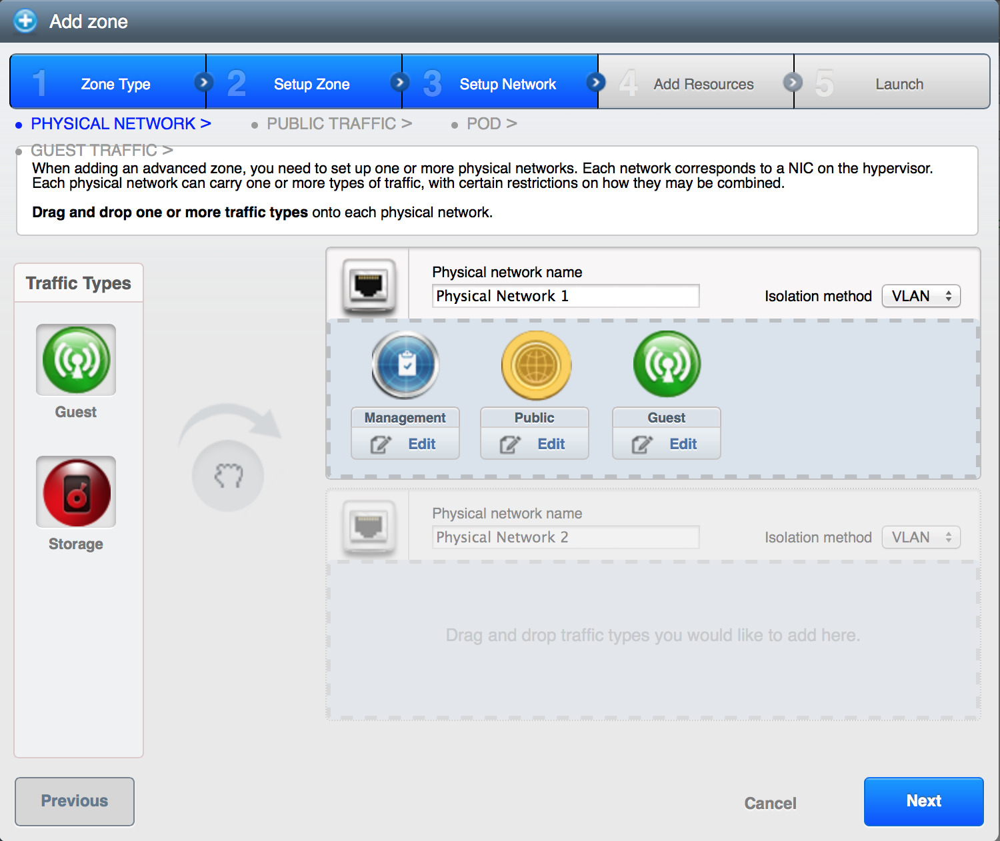
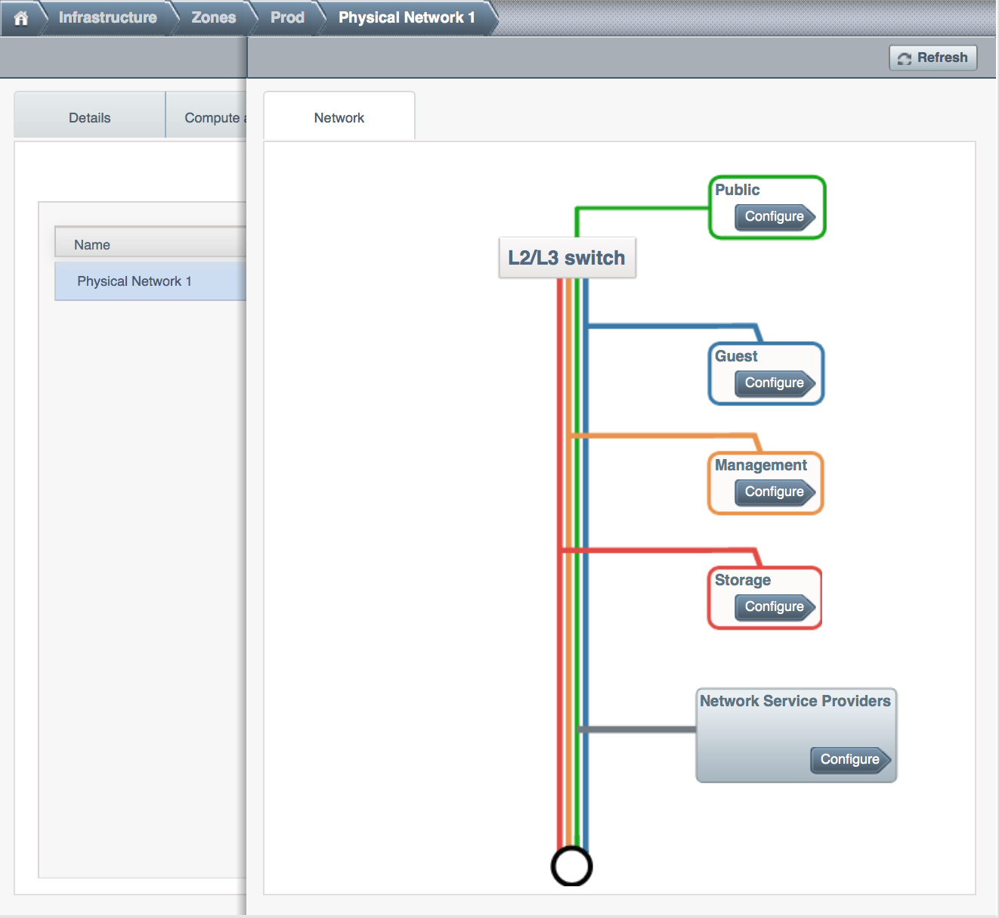
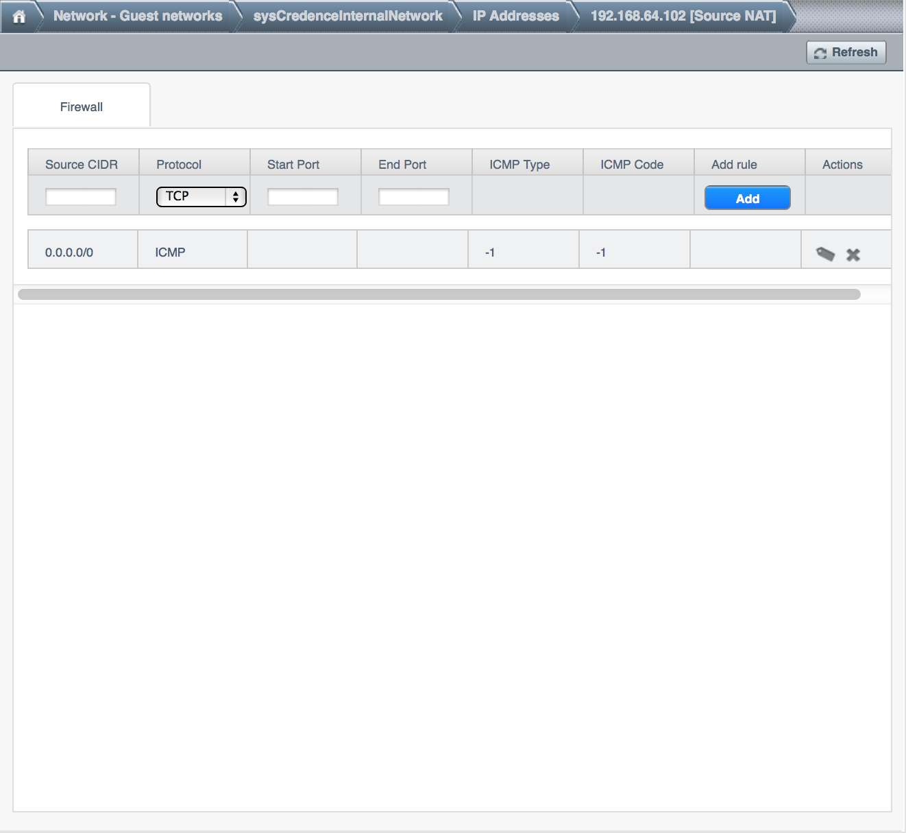
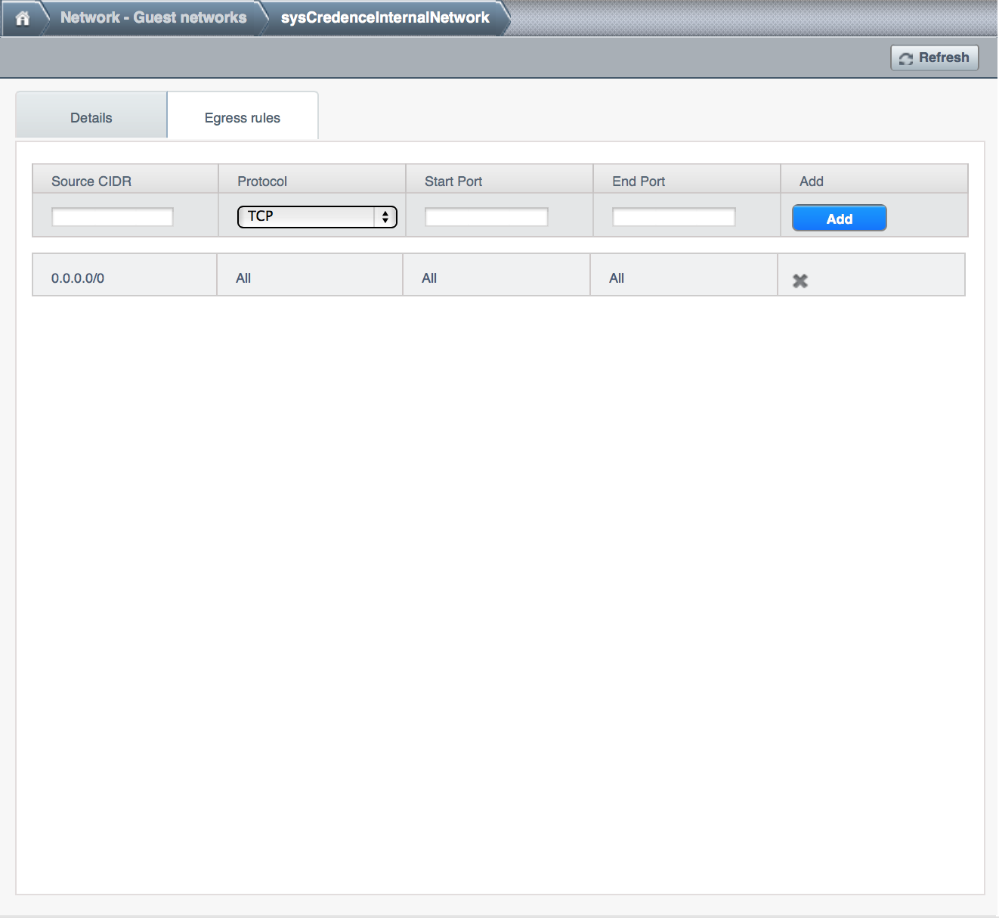

The switches have to be configured correctly to pass VLAN traffic. You can
verify if VLAN traffic is working by bringing up a tagged interface on the
hosts and pinging between them as below…
On host1 (kvm1)
kvm1 ~$ vconfig add eth0 64
kvm1 ~$ ifconfig eth0.64 1.2.3.4 netmask 255.255.255.0 up
kvm1 ~$ ping 1.2.3.5
On host2 (kvm2)
kvm2 ~$ vconfig add eth0 64
kvm2 ~$ ifconfig eth0.64 1.2.3.5 netmask 255.255.255.0 up
kvm2 ~$ ping 1.2.3.4
If the pings dont work, run tcpdump(8) all over the place to check
who is gobbling up the packets. Ultimately, if the switches are not
configured correctly, CloudStack networking wont work so fix the
physical networking issues before you proceed to the next steps
Ensure Traffic Labels are set for the Zone.
Traffic labels need to be set for all hypervisors including
XenServer, KVM and VMware types. You can configure traffic labels when
you creating a new zone from the Add Zone Wizard.

On an existing zone, you can modify the traffic labels by going to
Infrastructure, Zones, Physical Network tab.

List labels using CloudMonkey
acs-manager ~$ cloudmonkey list traffictypes physicalnetworkid=41cb7ff6-8eb2-4630-b577-1da25e0e1145
count = 4
traffictype:
id = cd0915fe-a660-4a82-9df7-34aebf90003e
kvmnetworklabel = cloudbr0
physicalnetworkid = 41cb7ff6-8eb2-4630-b577-1da25e0e1145
traffictype = Guest
xennetworklabel = MGMT
========================================================
id = f5524b8f-6605-41e4-a982-81a356b2a196
kvmnetworklabel = cloudbr0
physicalnetworkid = 41cb7ff6-8eb2-4630-b577-1da25e0e1145
traffictype = Management
xennetworklabel = MGMT
========================================================
id = 266bad0e-7b68-4242-b3ad-f59739346cfd
kvmnetworklabel = cloudbr0
physicalnetworkid = 41cb7ff6-8eb2-4630-b577-1da25e0e1145
traffictype = Public
xennetworklabel = MGMT
========================================================
id = a2baad4f-7ce7-45a8-9caf-a0b9240adf04
kvmnetworklabel = cloudbr0
physicalnetworkid = 41cb7ff6-8eb2-4630-b577-1da25e0e1145
traffictype = Storage
xennetworklabel = MGMT
=========================================================
KVM traffic labels require to be named as “cloudbr0”, “cloudbr2”,
“cloudbrN” etc and the corresponding bridge must exist on the KVM
hosts. If you create labels/bridges with any other names, CloudStack
(atleast earlier versions did) seems to ignore them. CloudStack does not
create the physical bridges on the KVM hosts, you need to create them
before before adding the host to Cloudstack.
kvm1 ~$ ifconfig cloudbr0
cloudbr0 Link encap:Ethernet HWaddr 00:0C:29:EF:7D:78
inet addr:192.168.44.22 Bcast:192.168.44.255 Mask:255.255.255.0
inet6 addr: fe80::20c:29ff:feef:7d78/64 Scope:Link
UP BROADCAST RUNNING MULTICAST MTU:1500 Metric:1
RX packets:92435 errors:0 dropped:0 overruns:0 frame:0
TX packets:50596 errors:0 dropped:0 overruns:0 carrier:0
collisions:0 txqueuelen:0
RX bytes:94985932 (90.5 MiB) TX bytes:61635793 (58.7 MiB)
The 虚拟路由器, SSVM, CPVM public interface would be bridged to
a physical interface on the host. In the example below, cloudbr0 is
the public interface and CloudStack has correctly created the virtual
interfaces bridge. This virtual interface to physical interface mapping
is done automatically by CloudStack using the traffic label settings for
the Zone. If you have provided correct settings and still dont have a
working working Internet, check the switching layer before you debug any
further. You can verify traffic using tcpdump on the virtual, physical
and bridge interfaces.
kvm-host1 ~$ brctl show
bridge name bridge id STP enabled interfaces
breth0-64 8000.000c29ef7d78 no eth0.64
vnet2
cloud0 8000.fe00a9fe0219 no vnet0
cloudbr0 8000.000c29ef7d78 no eth0
vnet1
vnet3
virbr0 8000.5254008e321a yes virbr0-nic
xenserver1 ~$ brctl show
bridge name bridge id STP enabled interfaces
xapi0 0000.e2b76d0a1149 no vif1.0
xenbr0 0000.000c299b54dc no eth0
xapi1
vif1.1
vif1.2
Pre-create labels on the XenServer Hosts. Similar to KVM bridge
setup, traffic labels must also be pre-created on the XenServer hosts
before adding them to CloudStack.
xenserver1 ~$ xe network-list
uuid ( RO) : aaa-bbb-ccc-ddd
name-label ( RW): MGMT
name-description ( RW):
bridge ( RO): xenbr0
The Internet would be accessible from both the SSVM and CPVM
instances by default. Their public IPs will also be directly pingable
from the Internet. Please note that these test would work only if your
switches and traffic labels are configured correctly for your
environment. If your SSVM/CPVM cant reach the Internet, its very
unlikely that the 虚拟路由器 (VR) can also the reach the Internet
suggesting that its either a switching issue or incorrectly assigned
traffic labels. Fix the SSVM/CPVM issues before you debug VR issues.
root@s-1-VM:~# ping -c 3 google.com
PING google.com (74.125.236.164): 56 data bytes
64 bytes from 74.125.236.164: icmp_seq=0 ttl=55 time=26.932 ms
64 bytes from 74.125.236.164: icmp_seq=1 ttl=55 time=29.156 ms
64 bytes from 74.125.236.164: icmp_seq=2 ttl=55 time=25.000 ms
--- google.com ping statistics ---
3 packets transmitted, 3 packets received, 0% packet loss
round-trip min/avg/max/stddev = 25.000/27.029/29.156/1.698 ms
root@v-2-VM:~# ping -c 3 google.com
PING google.com (74.125.236.164): 56 data bytes
64 bytes from 74.125.236.164: icmp_seq=0 ttl=55 time=32.125 ms
64 bytes from 74.125.236.164: icmp_seq=1 ttl=55 time=26.324 ms
64 bytes from 74.125.236.164: icmp_seq=2 ttl=55 time=37.001 ms
--- google.com ping statistics ---
3 packets transmitted, 3 packets received, 0% packet loss
round-trip min/avg/max/stddev = 26.324/31.817/37.001/4.364 ms
The 虚拟路由器 (VR) should also be able to reach the Internet
without having any Egress rules. The Egress rules only control forwarded
traffic and not traffic that originates on the VR itself.
root@r-4-VM:~# ping -c 3 google.com
PING google.com (74.125.236.164): 56 data bytes
64 bytes from 74.125.236.164: icmp_seq=0 ttl=55 time=28.098 ms
64 bytes from 74.125.236.164: icmp_seq=1 ttl=55 time=34.785 ms
64 bytes from 74.125.236.164: icmp_seq=2 ttl=55 time=69.179 ms
--- google.com ping statistics ---
3 packets transmitted, 3 packets received, 0% packet loss
round-trip min/avg/max/stddev = 28.098/44.021/69.179/17.998 ms
However, the 虚拟路由器’s (VR) Source NAT Public IP address
WONT be reachable until appropriate Ingress rules are
in place. You can add Ingress rules under Network, Guest Network, IP
Address, Firewall setting page.

The VM Instances by default wont be able to access the Internet. Add
Egress rules to permit traffic.

Some users have reported that flushing IPTables rules (or changing
routes) on the SSVM, CPVM or the 虚拟路由器 makes the Internet work.
This is not expected behaviour and suggests that your networking
settings are incorrect. No IPtables/route changes are required on the
SSVM, CPVM or the VR. Go back and double check all your settings.
In a vast majority of the cases, the problem has turned out to be at the
switching layer where the L3 switches were configured incorrectly.